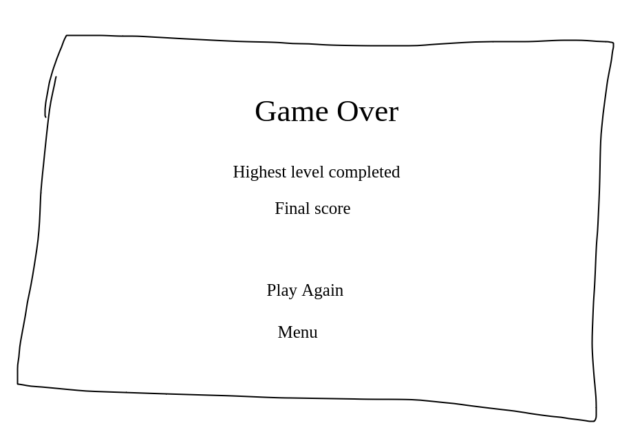
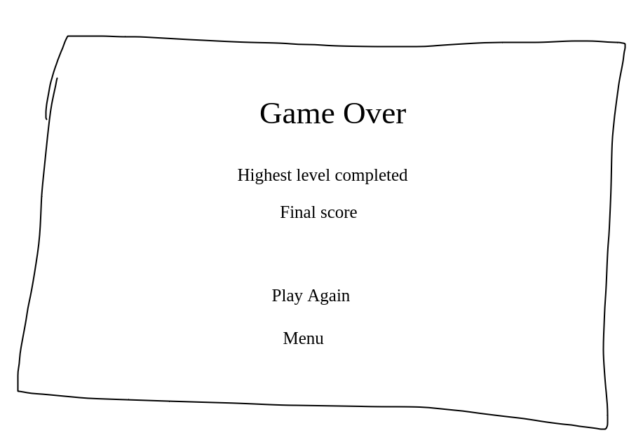

This game will be a recreation of the classic game Atari Breakout, with some of my own additions. In addition to the regular functionality, I plan to have an infinite number of levels, with the goal being to last as long as possible. I also want to add various powerups that the player can collect to help them out.
This game falls into the genres of action and arcade
This game will be primarily designed for desktop, as the primary controls will be from keyboard input.
This game will have infinite levels, and the only ending will be if the player runs out of lives or chooses to quit. The player's goal is to complete as many levels as possible. As the player completes more levels, they will have more opportunities to get power ups that will help them out.
The graphics style for this game will be simple shapes, with different shapes and colors indicating different things. I plan to use 8 bit sound effects in the game when various events happen. At the moment, I want to have sound effects for the following events:
In this game, the player will be able to move the paddle left and right to line it up with the ball so that the ball bounces off of it. The player will also be able to collect power ups by getting the ball to collide with the power up object, which will be randomly positioned on the screen between the paddle and the bricks. When the player collects a powerup, it has an effect that benefits the user in some way. These effects will trigger as soon as the power up is collected.
The controls in this game will be keyboard controls
I plan to have a specific screen in the game that tells the user how the game works and what the controls are. This screen will be accessible from the main menu by clicking on a button.
In order to do well in this game, the player will need to learn how the ball bounces off the different objects in the game, because this will allow them to predict where the ball will go, so that they can move the paddle to the appropriate location before the ball gets there. The player will also need to learn about the different powerups in the game, which are as follows
 

My name is Ella. I am a 2nd year Game Design and Development student at Rochester Institute of Technology. I have experience working with a variety of programming languages and technologies, including C#, Java, HTML/CSS, JavaScript/TypeScript, ReactJS, SQL, C++, and more. I am always looking to expand my skillset, and currently, I am in the process of learning Rust.